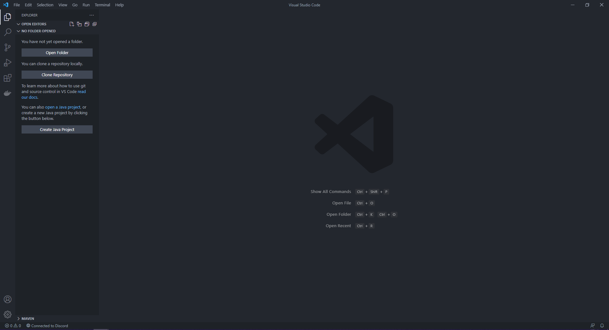
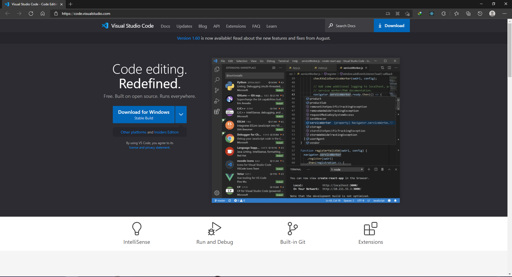
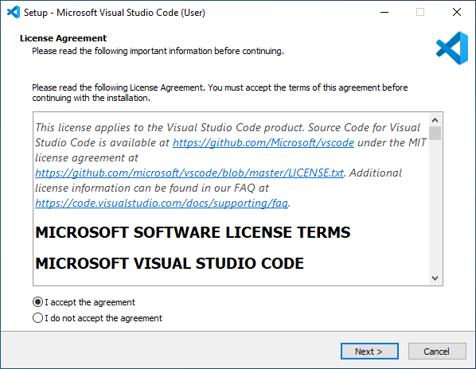
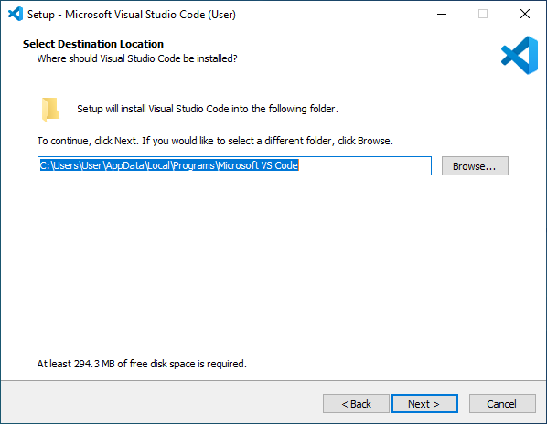
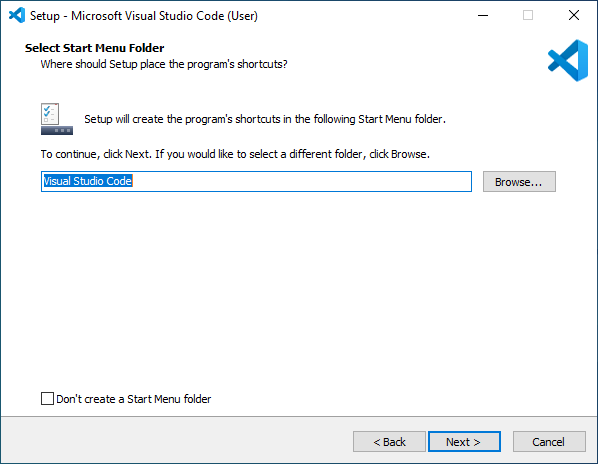
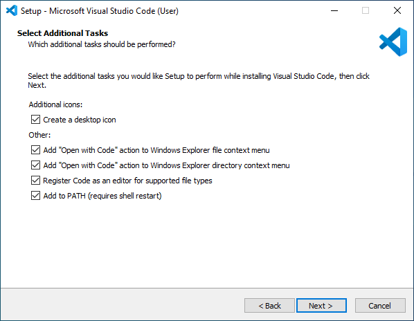
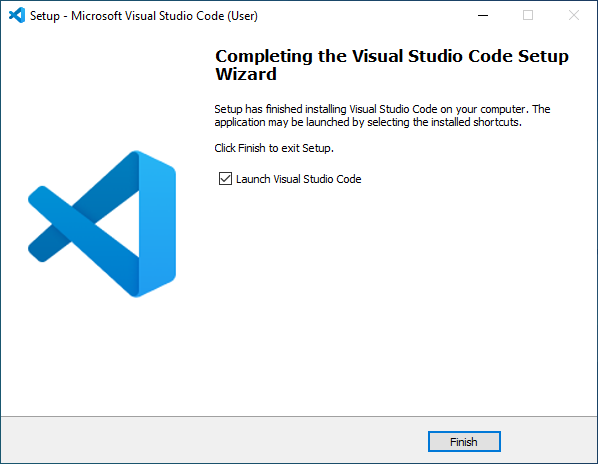

Cara Install Visual Studio Code pada Windows

Visual Studio Code adalah text editor yang dikembangkan oleh Microsoft yang di rilis pada awal 29 april 2015. Visual Studio Code bisa disebut dengan VSCode. Versi VSCode saat ini yang dirilis yaitu Version 1.52 dikeluarkan pada bulan November 2020.
Visual Studio Code merupakan salah satu text editor yang paling populer dikalangan Web developer diseluruh dunia. Para web developer itu yang mengembangkan aplikasi web menggunakan ASP.NET, Node.js, HTML, CSS, Less, Sass, dan JSON. Seperti editor pada umumnya VSCode memiliki fitur syntax coloring dan bracket matching. Bahasa pemrograman yang mendukung fitur tadi adalah Batch, C++, Closure, Makefile, Markdown, Objective-C, Perl, PHP, PowerShell, Python, R, Razor, Ruby, SQL, Visual Basic, dan lain-lain.
Berikut ini adalah cara menginstall Visual Studio Code di Windows :
1. Download Visual Studio Code
Klik pada link berikut untuk mengunduh Visual Studio Code.
Kemudian pilih download for windows.

2. Kemudian buka folder download, lalu buka file installer vscode yang sudah di download tadi.
3. Instalasi Visual Studio Code
Klik "I accept the agreement" kemudian klik Next >

klik Next >

klik Next >

Ceklis semua dan klik Next > dan Klik Install, tunggu hingga instalasi selesai

Setelah proses instalasi selesai, klik Finish

4. Instalasi Selesai
Sampai sini proses instalasi telah selesai, dan kalian bisa mulai ngoding menggunakan Visual Studio Code.
Salah satu kelebihan VSCode adalah, banyak nya ekstensi yang bisa kalian gunakan untuk mempermudah kalian saat menuliskan code.